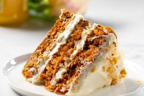

Carrot Cake

This cake is surprisingly simple to make!I am a bit biased because carrot cake is my favoirte!
There is something about a moist crumb, the perfect amount of spices, and a cream cheese frosting. It is sweet without being too sweet. Crafted with the right amount ofd butter and oil and just the right amount of carrots, the flavor is so good you will have a second piece (or third)
Ingredients
- 2 1/2 cups of all-purpose flour
- 1 cup granulated sugar
- 1 cup light or dark brown sugar
- 1 1/2 teaspoon baking soda
- 1 teaspoon baking powder
- 1 teaspoon salt
- 2 teaspoons ground cinnamon
- 1/2 teasponns ground nutmeg
- 1 cup cooking oil
- 1/2 cup unsalted butter
- 4 large eggs
- 1 tablespoon vanilla extract
- 3 cups grated carrots (peeled before grating)
- 1 cup chopped walnuts(optional)
Cream Chesse Frosting
- 1/2 cup unsalted butter
- 8 oz cream cheese
- 1 tablespoon vanilla extract
- 1/4 teaspoon salt
- 4 cups powdered sugar
Steps
- Preheat oven to 350F and prepare two 8-inch pans by lining the bottoms with parchment papaer and lightly grasing and flouring the sides
- In a large bowl, whisk together your flour, sugars, baking powder, baking soda, salt. cinnamont, and nutmeg.
- Add your canola oil and melted butter and stir well
- Add eggs, one at a time, stirring well after each addition
- Stir in vanilla extract
- Stir in carrots and nuts(if using) until ingredients are well-combined
- Evenly divide carrot cake batter into prepared baking pans and bake on 350F for 40 minutes. Insert toothpick in center, should come out mostly clean with a few moist crumbs.
- Allow cakes to cool in pans for 10 minutes, then run a knife around the edge and invert onto cooking rack to cool completely
- Allow cake to cool completely before covering with cream cheese frosting
Cream Cheese Frostning
- Combine butter and cream cheese in a large bowl and mix until creamy, well-combined, and lump-free
- Add vanilla extract and sprinkle salt into the bowl and stir well to combine
- With mixer on low(if using), gradually add powdered sugar until ingredients are completely combined
- Once cake has cooled completely, cover with frosting